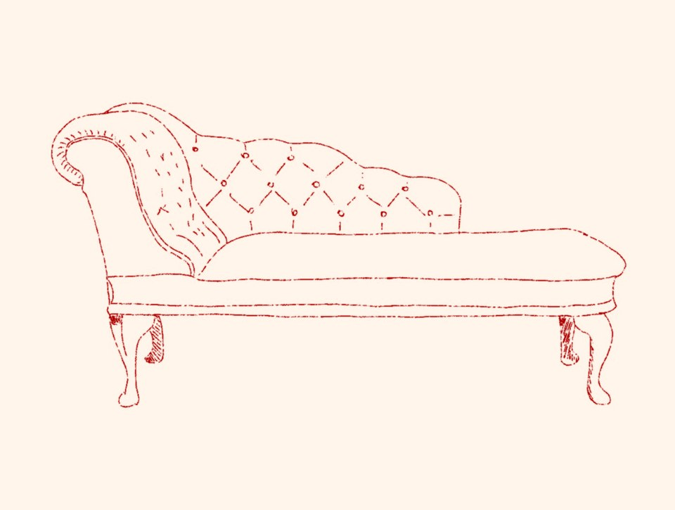
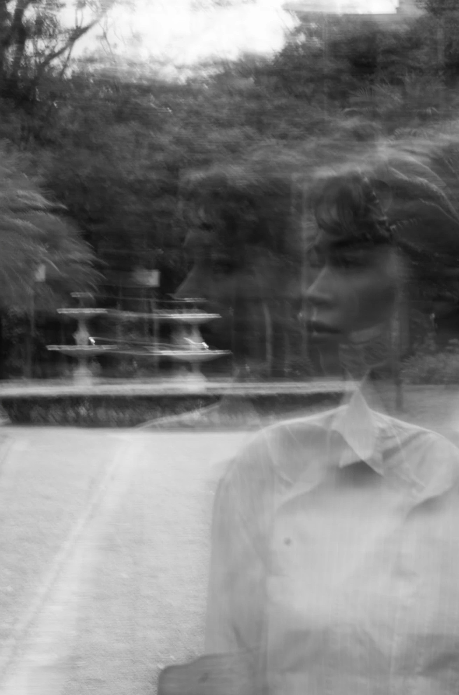
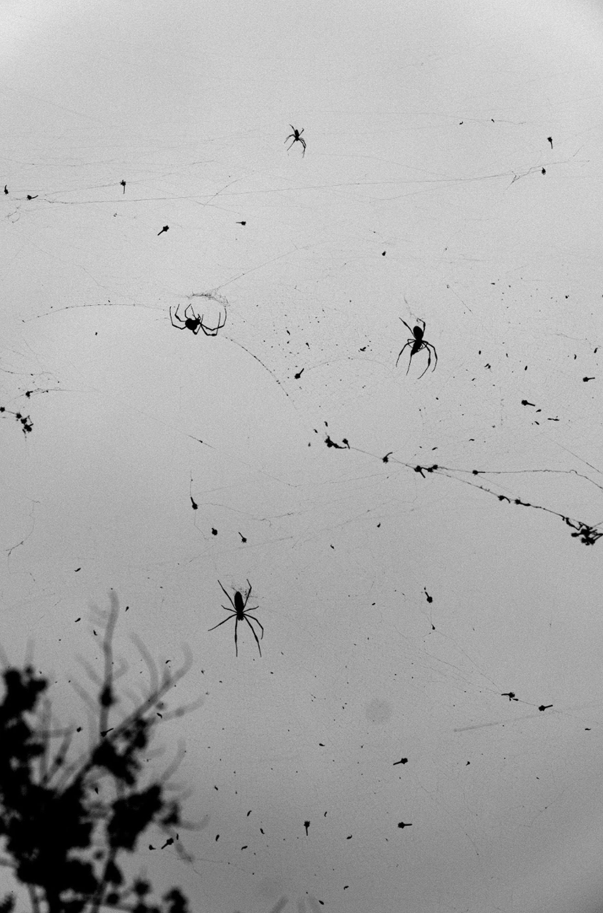
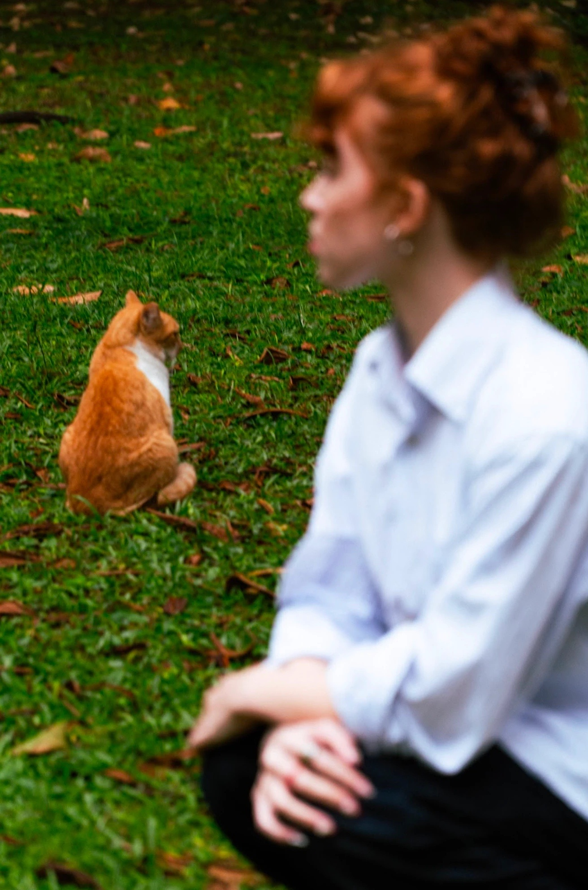

Um espaço para colocar em palavras aquilo que ainda não encontrou forma de ser dito
Atendimento psicológico para crianças, adolescentes e adultos, online ou presencial (Vila Andrade-SP).
Sobre mim
Sou psicóloga formada pela Universidade Presbiteriana Mackenzie e pós-graduanda em psicanálise, filosofia e sociedade.
De onde vem meu olhar
Minha relação com a psicologia começou através da arte. O cinema, a música e a literatura despertaram em mim perguntas sobre o ser humano: por que determinadas obras nos atravessam tão profundamente? Por que algo que nos encanta ou aflige pode provocar efeitos tão diferentes em cada pessoa?
Foi a partir dessas perguntas que percebi que meus interesses convergiam para uma questão maior: compreender o ser humano, sua complexidade e tudo aquilo que atravessa sua existência.
Como trabalho
Hoje, essa mesma curiosidade sustenta minha prática clínica. Em cada encontro, me interesso pela singularidade da sua história, buscando construir, junto com você, um espaço onde seja possível colocar em palavras aquilo que, muitas vezes, ainda não encontrou forma de ser dito.
Aqui, você está no centro do seu processo terapêutico, em um espaço de investigação de si mesmo, livre de julgamentos.
No que acredito
Acredito em uma relação terapêutica baseada na parceria e na horizontalidade. Por isso, além da dimensão individual, considero também as relações, a cultura e o contexto social que atravessam cada experiência.
A terapia pode ser um espaço para perceber e ressignificar aquilo que se repete e causa sofrimento, abrindo possibilidades para novas formas de se relacionar consigo mesmo, com o outro e com o mundo. Uma construção conjunta em direção a uma vida mais autêntica, leve e coerente com quem somos e desejamos ser.

Abordagem psicanalítica: construir novos sentidos
A psicanálise compreende a linguagem como parte fundamental da forma como nos constituímos, damos sentido às experiências e construímos nossa relação com o mundo.
-

Nomear
É através da linguagem que damos significado ao que vivemos. Ao encontrar palavras para aquilo que antes não tinha forma, começamos a compreender nossa própria história.
-

Elaborar
A terapia é um espaço para olhar para aquilo que nos constitui, investigar experiências e compreender os sentidos que construímos ao longo da vida.
-

Ressignificar
Dar um novo sentido ao que foi vivido não significa apagar o passado. Significa permitir que ele ocupe seu lugar e abrir espaço para novas formas de ser, sentir e estar.
O passado pode ocupar seu lugar sem impedir que algo novo possa surgir.
Como é o atendimento
- Para quemCrianças, adolescentes e adultos
- FormatoOnline e presencial
- ConsultórioVila Andrade, São Paulo
- AbordagemPsicanálise